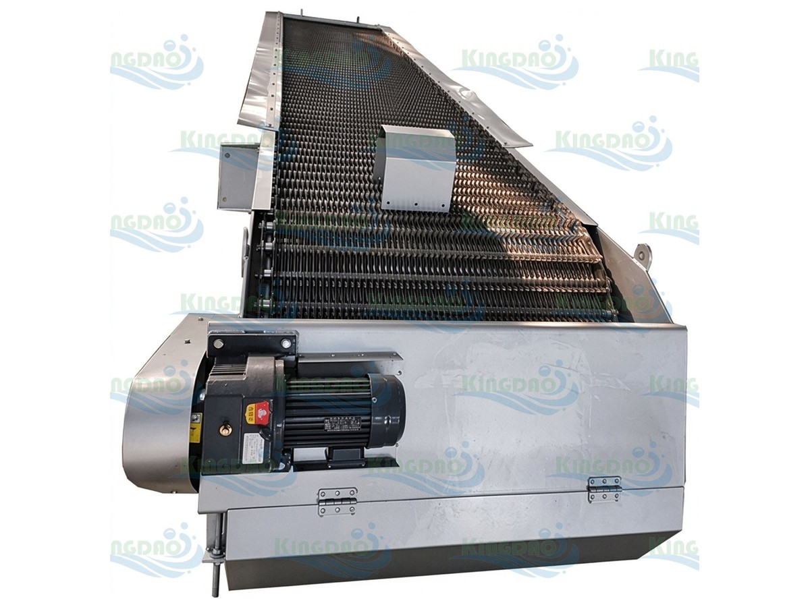
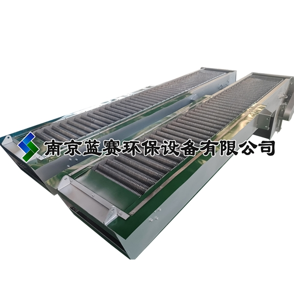
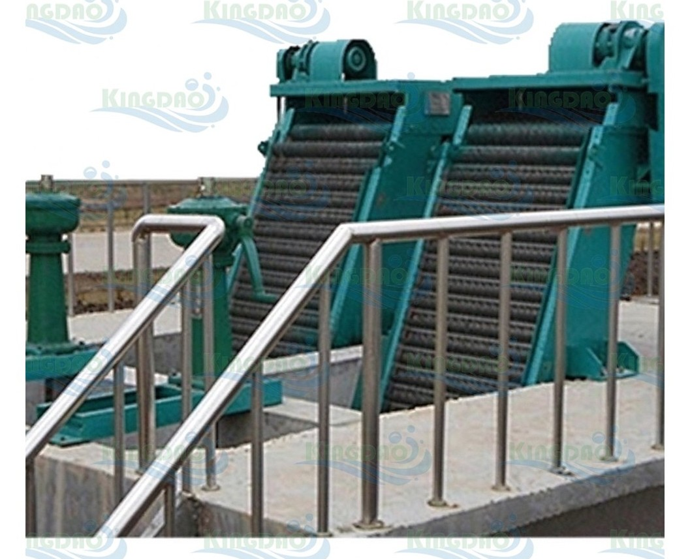
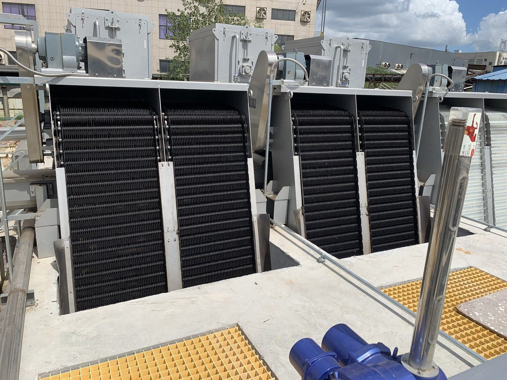

A mechanical bar screen removes solids from the incoming flow by raking them off the bar rack and lifting them into a bin, conveyor or washer. It is the first barrier in most municipal and industrial plants, and the stage that decides how much maintenance everything downstream needs.
The screen is installed in a channel, inclined at the angle that suits the bar spacing and the screenings load. Rake arms travel down the rack, collect the retained material and carry it up; cleaning can be triggered on a timer, on a differential level sensor, or manually.
A bar screen is sized by the channel it sits in: width and depth decide the mechanism, the rake gap decides what reaches the next stage. Below are the four drives we build, with the range each one actually covers.
| Type | Rake gap | Channel width | Channel depth | Install angle | Drive motor | Capture |
|---|---|---|---|---|---|---|
| Rotary rake — bars sit between the chains, so screenings cannot ride under the rake | 1–50 mm (10–50 coarse / 1–10 fine) | 500–3,000 mm | 1,000–5,000 mm | 60°–75° | 0.55–5.5 kW, IP55 | ≥95% |
| Mechanical coarse — continuous chain-rake, the workhorse for municipal inlets | 10 / 20 / 30 / 40 / 50 mm | 500–3,500 mm | to civil drawing | 60°–75° | 0.75–5.5 kW, IP55 | rake speed 2.5–4.5 m/min |
| Grab type — single grab on a travelling gantry; wide and deep channels | 10–50 mm | 1,000–8,000 mm | 1,500–8,000 mm | vertical | hoist 4–8 m/min, travel 6–12 m/min | intermittent duty |
| Rotary cleaner (GSHZ) — compact single-frame unit for pump stations | 10–50 mm | 600–2,000 mm | 2,000–5,000 mm | 75° | 0.75–2.2 kW, IP55 | continuous |
Rake type and rotary type — the choice follows the channel width, the screenings load and how much operator attention the plant can spare. Grab-type units in the table are built to the channel; arrangement drawings are issued per project rather than shown as a stock photo.



Municipal intake · pump station protection · industrial pre-treatment
Flow, the medium, the installation and the discharge requirement — that is enough to select and quote.
